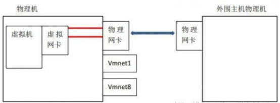
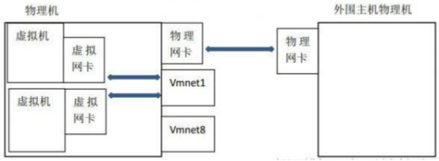
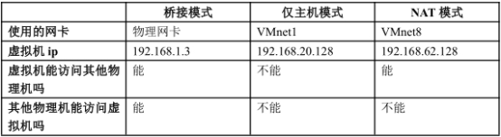

1.1. 虚拟机的三种网络模式
桥接
在网络网卡上安装了一个桥接协议，让这块网卡处于混杂模式，可以同时连接多个网络的做法。
桥接下，类似于把物理主机虚拟为一个交换机，所有桥接设置的虚拟机连接到这个交换机的一个接口上，物理主机也同样查在这个交换机当中，所以所有桥接下网卡与网卡都是交换模式的，相互可以访问而不干扰。

Host-only（仅与主机通信）
虚拟机使用VMnet1网卡与主机单独组网,主机对于虚拟机相当于路由器

NAT
虚拟机使用VMnet8网卡与主机单独组网,主机对于虚拟机相当于路由器，VMnet8网卡通过NAT地址转换协议与物理机网卡通信

1.2. 虚拟机常见问题
1.2.1. 修改静态地址后发现无法ping外网
需要设置网关
route add default gw 192.168.33.1
添加nameserver
vi /etc/resolv.conf
nameserver 192.168.33.1
1.2.2. 虚拟机克隆后eth0消失
直接修改 /etc/sysconfig/network-script/ifcfg-eth0
删掉UUID HWADDR
配置静态地址
然后：
rm -rf /etc/udev/rules.d/70-persistent-net.rules
然后 reboot
1.3. SecureCRT_FX
初始设置
更改crt颜色 选项 --> 常规 --> 默认会话 --> 编辑默认配置 --> 终端 --> 仿真 --> 终端 改为linux 更改字符集 选项 --> 常规 --> 默认会话 --> 编辑默认配置 --> 终端 --> 字符编码 设置为UTF-8
CRT中文乱码问题
进入SecureCRT_FX_7.0\Data\Settings\Config\Sessions 找到对应主机的配置文件 找到245行 D:"Filenames Always Use UTF8"=00000000改为D:"Filenames Always Use UTF8"=00000001